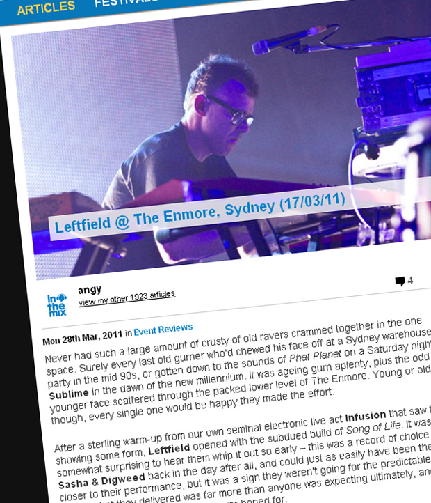

Leftfield live at The Enmore, Sydney
{kind=link}

Never had such a large amount of crusty of old ravers crammed together in the one space. Surely every last old gurner who’d chewed his face off at a Sydney warehouse party in the mid 90s, or gotten down to the sounds of Phat Planet on a Saturday night at Sublime in the dawn of the new millennium. It was ageing gurn aplenty, plus the odd younger face scattered through the packed lower level of The Enmore. Young or old though, every single one would be happy they made the effort.
After a sterling warm-up from our own seminal electronic live act Infusion that saw them showing some form, Leftfield opened with the subdued build of Song of Life. It was somewhat surprising to hear them whip it out so early – this was a record of choice for Sasha & Digweed back in the day after all, and could just as easily have been the epic closer to their performance, but it was a sign they weren’t going for the predictable thrills here – what they delivered was far more than anyone was expecting ultimately, and more than I personally could have ever hoped for.
When the driving beat finally dropped as the song reached its famous crescendo, the uplifting chords breaking out over the speakers, a cheer erupted amongst the crowd, which was merely a touch of the elation that was going to be felt through The Enmore tonight.
We’d had some spectacular live dance acts in town for Future Music Festival, but this wasn’t a sparse “laptop live” set-up like we so often see – there was a huge posse of musicians on stage, including founding member Neil Barnes on keyboards along with another two pals behind electronic devices, in addition to a bassist, guitarist and percussionist, the latter playing off a mix of real drum kits and FX pads, meaning the beats sounded synthetic, bass-heavy and punchy in the manner that was needed to recreate all those dancefloor classics.
Supporting them was up to three or four vocalists on stage at any one time ( Djum Djum, Earl 16 and Cheshire Cat named as some of the originals who’d been recruited again) with three tall LCD screens behind them pumping out what could be described as “functional” visuals over the two hours – retro CG, flashing colours, iconic Leftfield imagery like a 3D render of the shark jaws on the front cover of Leftism.
Following was the restrained dub vibes of Storm 3000, with the crew still cleverly keeping the energy levels in check this early in the performance, before the rolling breakbeats of Original lifted things just a little bit higher, with the ridiculously sexy Toni Halliday (from ‘90s UK indie act Curve ) stepping up to perform her sultry vocals.
This was just a warm-up though; next, a fairly overweight man with a hoodie pulled over his head strolled onto the stage with the middle age gait of Shaun Ryder – who he was I had no idea, but when he started spitting out the chants of Afro Left, and the pumping 4/4 beat dropped, the place exploded.
Nothing could have prepared me for how much it smashed the shit out of the crowd, garnering possibly one of the biggest responses I’ve ever witnessed from a crowd gathered together in an enclosed space, and it represented the point where the intensity stepped up a level.
Every track that followed after that was a trigger for some kind of epic memory – Leftfield might have only released two albums, but hearing the repertoire of Leftism and Rhythm & Stealth live only emphasised their timeless quality. The futuristic hip hop beats of Check One got the crowd jumping, and when the pounding breakbeats of Africa Shox dropped (with Afrika Bambaataa representing his Zulu warblings on the video screens), the power was just so much more savage and intense than it ever was on your home stereo.
That was nothing compared to when the evening rose to its sweaty peak as the swirling whooshes of Space Shanty began whipping through the soundsystem. The song is like a gestating rave child that evolves over the space of eight minutes into a throbbing puddle of PLUR, and The Enmore was transformed into a sweaty, raucous den of hedonism as the tune’s unforgettable acid riff was introduced into the mix and the song reached its crescendo. When did these tunes ever sound this powerful? Wow.
And then, the Leftfield posse had left the stage, and it would have been a grand way to wrap the evening, but instead we got an encore as the core trio returned to their machines and those dreamy, ethereal synths of Melt rose over the speakers – again sounding far more powerful than they ever did on record. And we felt the start of the epic finale rattling our rib-cages as the rumbling bassline of Phat Planet began to build, holding the tension for what seemed like an eternity before it finally exploding over the speakers and devastated us with its raw, grimy power.
Personally I’ve always been suspicious about ‘legacy’ acts reuniting to tour in the absence of any new material, but I was forced to shelve my cynicism back when Rage Against The Machine wrought utter destruction at the Big Day Out a few years ago. The two acts couldn’t be any more different, sure, but the comparison is still valid because they both delivered shows of phenomenal power, with the redlining energy levels tied inexplicably to their extended absence.
The prospect of finally seeing Leftfield live was an exciting one, but the grand nature of their set-up meant it delivered on this excitement and more. The power of Leftfield’s musical legacy was affirmed, with the live gig of the year so far.